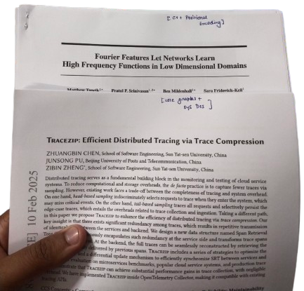
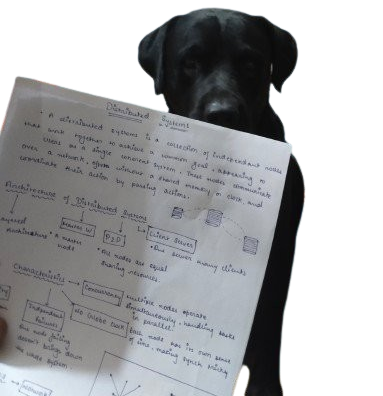

After reading white papers for a long peried, I have noticed that academic papers can hard to understand because of jargons and complex ideas, but they hold a lot of valuable information if we learn how to read to them.
Two papers which I haven't read
I get it, there are lots of research papers related to ai, backend, infrastructure coming out weekly. People posting I have read this paper, learned X Y Z and sometimes people (me) post that they have mimic the benchmarks and logic of the paper to build something out of it as a project and sometimes these projects can stand out from others and create a big difference.
But now you are excited, searched for papers from perplexity, it showed a arivx paper, you installed the pdf of the paper. NOW WHATT !! you go through the paper understand nil about the topic nor did you get the abstract :((
I have nearly read 30 ~ 35 papers this year from papers having 5 pages to
papers having 30+ pages, so thought to write a little bit on how to start
reading :))
Okkay first of all I want you to develop the ...
Always have this question before staring any paper. This may looks simple but it really matters on how are your learnings from this paper will go through. Defining the purpose sharpens our focus, saves time and esures we extract meaningful insights from the paper, whether it's 5 page or 100+ page paper.
Now you would have the question, How to even build this habbit ?? so here is my trick before opening the PDF, take 30 seconds to jot down your purpose. Be specific. Instead of “I want to learn AI,” try “I want to understand how this paper’s attention mechanism improves model efficiency for my chatbot project.” Revisit this why if you feel lost mid-paper, it’s our anchor.
You have your paper installed, you got your "Why" now what ?? ...
Okkay starting with the second step, you need to know if the paper is really falling under your category of learning or the paper should be just surfed around. What does surfed around means ?? for me I dont really read papers to gain core knowledge, sometimes I read different genre research papers to gain a general knowledge of different fields so that when time comes I can really brag about it in twitter spaces or meetups and gain some new friends who can really teach me more :))
So comming back to our topic what is even Helicopter View ?? .. its just skimming the whole paper or just the title and abstract and categorize the paper, for me I my categories are core learning (learning related to skillset I own for now), surfing(just to read and take small notes), time pass(nothing serious just reading it to make a habbit).

This step helps me decide if I should go all in for paper and complete the paper in 1 ~ 2 weeks digging deep around the topics of the paper or just chill with the paper
You have gone through the title and the abstract, it's a paper that attracts your interest for learning and diving deep into the topic. Now what ?? .. Read it anon
This is what I do with most of the papers I dig deep into, after skimming the paper once I note down these questions and try to answer it my self, What are the main research question ?, What methods did they use ?, What are the main conclusions ? getting some of the core details help me to finish the paper with more understanding in least amount time spent on it.
Why does this work ? Answering these questions forces me to engage with the paper’s big picture before I get bogged down in details. For example, identifying the main research question tells me what problem the authors are tackling maybe it’s improving neural network efficiency or optimizing database queries. Knowing the methods (e.g., a novel algorithm or a specific dataset) gives me a sense of how they approached it, which is critical if I'm planning to replicate or build on their work. And the conclusions? They’re the payoff—what did the authors prove or discover? These hooks anchor my reading, so I'm not just passively scanning pages.
This step also helps me decide my commitment level. Let’s say the paper’s research question aligns perfectly with my project, and the methods are something I can experiment with. That’s my signal to go deep—maybe spend a week reading related papers or coding a small prototype. On the flip side, if the conclusions are interesting but not directly relevant, I can chill, extract the key takeaways, and move on. I’ve saved hours by using these hooks to avoid over-investing in papers that sound cool but don’t serve my goals.
Now, if I’ve decided to go all-in, it’s time to get eye to eye with the paper. When diving deep into the topics of research papers, I like to print a hard copy. There’s something about holding those pages that gives me a sense of responsibility to complete the paper. Replicating the system built by the authors give me a deeper knowledge of the methods and thier approach. I break the paper into sections and tackle them over a few days. For example, I’ll spend one session on the introduction and background to get the context, another on the methodology to understand the nuts and bolts, and a third on results and discussion to see what it all means. This paced approach prevents burnout and lets me absorb complex ideas. If the paper has code or datasets (check GitHub or the authors’ website!), I download them and start experimenting. Even a small replication like running their model on a toy dataset—can reveal insights that skimming never will.
How do I even remember what I have read and implemented ?? ..
I tend to teach the learnings of my paper either to one of my best friend or record a video while explaining the paper deeply which also enhances my speaking part and expands my vocabulary
Me explaining my best friend about the distributed system paper which I read. :))
Often times the writing structure of the paper is bad becuase sometimes English is the second language for the author. There maybe some grammatical mistakes or punctuation mistakes but the most important thing should be the outcome or the message from the paper.
after finishing the paper, I always drop my notes as a cold email to the authors gmail and send a thank you message from my side just as a token of appreciation :))
Hope I was able to add value to your today's learning goal !! Happy Learning ..